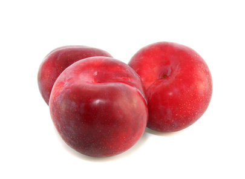

Plums (several Prunus spp.)

Mating & Breeding System: Prunus flowers are similar to apple and pear, except they possess only one style and one ovary containing a pair of ovules. The flowers of most cultivars are incapable of self-fertilization, and require pollen from an appropriate pollenizer cultivar. Commonly cultivated species in Ontario are the European plum (P. domestica) and Japanese plum (P. salicina). Cultivars of European plum will not fertilize Japanese plum and vice-versa, however plums are sometimes crossed with apricots to produce "plumcots”.
Pollination, Quality & Yield: If both ovules in each flower are fertilized, a symmetrical fruit will result. If only one of the two ovules is fertilized then one side of the fruit may be underdeveloped, which can reduce the fruit’s value. There is research to suggest that cultivars that are capable of self-pollination will produce fruit of superior quality (shape) when cross-pollinated with another cultivar.
Pollination Recommendations: A suitable pollenizer cultivar should be planted in a staggered pattern with the production cultivar. Honey bees can improve fruit set and yield.. The standard recommendation is to place 2.5 strong colonies per hectare when 30% of flowers in the orchard are in bloom. Hive openings should face south to facilitate warming in the morning and encourage bee activity.
Problems with poor fertilization may arise during the early flowering period in the spring, when unfavorable weather can decrease honey bee foraging activity. Bumble bees and blue orchard bees may be useful for plum pollination during inclement weather. Wild bees and possibly even flies are may also be helpful, particularly in small orchards adjacent to wild habitat.
Managing competing blooms is an important concern when managing pollination. If encouraging wild pollinators, or establishing an alternative pollinator such as the blue orchard bee, is of interest to the orchardist, alternate forage is required for these bees to complete their life cycle (see Examples of Alternative Pollinator Forage and “Habitat and Food”). One option for orchardists is to plant forage between tree rows which will flower after the crop bloom period.
At the same time, weeds or alternative forage should not be allowed to compete with crop blooms (especially if the crop is less attractive to foraging insects than the weeds). Growers should mow (not apply herbicide) competing blooms during fruit bloom only. However, growers should also be aware that alternative forage may attract bees to orchards off-bloom. This can result in bee kills for neighbouring beekeepers if the grower uses insecticides.
References
Benedek, P. & Nyeki, J. 1996. Fruit set of selected self-sterile and self-fertile fruit cultivars as affected by the duration of insect pollination. Acta Horticulturae 423:57-63.
Bosch, J. & Kemp, W.P. 1999. Exceptional cherry production in an orchard pollinated with blue orchard bees. Bee World 80:163-173.
Bosch, J., Kemp, W.P., & Trostle, G.E. 2006. Bee population returns and cherry yields in an orchard pollinated with Osmia lignaria (Hymenoptera: Megachilidae). Journal of Economic Entomology 99:408-413.Calzoni & Speranza 1998
Delaplane, K.S. & Mayer, D.F. 2000. Crop Pollination by Bees. CABI Publishing, New York.
Free, J.B. 1962. The effect of distance from pollenizer varieties on the fruit set on trees in plum and apple orchards. Journal of Horticultural Science 37:262-271.
Free, J.B. 1993. Insect Pollination of Crops, 2nd edition. Academic Press.
Fitzgerald, T. 2005. Pollination of fruit trees. Spokane County Extension, Washington State University, Spokane WA.
Hassan, H.S.A., Mostafa, E.A.M., & Enas, A.M.A. 2007. Effect of self, open, and cross pollination on fruit characteristics of some plum cultivars. American-Eurasian Journal of Agriculture and Environmental Science 2:118-122.
Jun, J.H. & Chung, K.H. 2007. Interspecific cross compatibility among plum, apricot and plumcot. Korean Journal of Horticultural Science and Technology 25:217-222.
Kevan, P.G. 1988. Pollination, crops and bees. OMAFRA publication 72.
Manino, A., Marletto, F., Patetta, A., & Porporato, M. 1995. On the role of the insects in Japanese plum pollination. Apicoltore Moderno 86:13-18.;
Sapir, G., Goldway, M., Shafir, S. & Stern, R.A. 2007. Multiple introduction of honey bee colonies increases cross-pollination, fruit set, and yield of 'Black Diamond' Japanese plum (Prunus salicina Lindl.). Journal of Horticultural Science and Biotechnology 82:590-596.
Sapir, G., Stern, R.A., Shafir, S., Goldway, M. 2008. Full compatibility is superior to semi-compatibility for fruit set in Japanese plum (Prunus salicina Lindl.) cultivars. Scientia Horticulturae 116:394-398.
(Scott-Dupree & Winston 1987)
Scott-Dupree, C.D., Winston, M., Hergert, G., Jay, S.C., Nelson, D., Gates, J., Termeer, B., & Otis, G. 1995. A guide to managing bees for crop pollination. Canadian Association of Professional Apiculturists, Aylesford NS.
Slingerland, K. & Lay, B. 2007. Plum cultivars - European and Japanese. OMAFRA FactSheet 07-039.
Thomson, J.D. & Goodell, K. 2001. Pollen removal and deposition by honeybee and bumblebee visitors to apple and almond flowers. Journal of Applied Ecology 38:1032-1044.